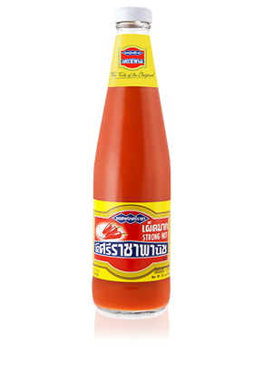

TOP PICK
Curry paste
พริกแกง
A flavorful and aromatic ingredient that serves as the foundation for various Thai dishes. Its versatility and ability to impart complex flavors make it an essential element in Thai cooking.
Sri Racha
ซอสพริกศรีราชา
It was created by a Thai immigrant named David Tran in the early 1980s when he founded Huy Fong Foods, the company that produces one of the most famous brands of Sriracha.
Tamarind paste
น้ำมะขามเปียก
A tangy and versatile ingredient that enhances the flavor of a wide range of dishes. Its sweet and sour taste makes it a popular choice in various cuisines around the world.
Seasoned fermented fish sauce
น้ำปลาร้า
A pungent and savory condiment made from fermented fish and salt. It plays a crucial role in the culinary traditions of Southeast Asia, adding depth of flavor to a wide range of dishes.
Fish sauce
น้ำปลา
Known as "Nam Pla" in Thai, is a fundamental and widely used condiment in Thai cuisine.
Salted Shrimp paste

กะปิ
Referred to as "Kapi" in Southeast Asian cuisine, is a condiment with a unique flavor profile and a key ingredient in many dishes.